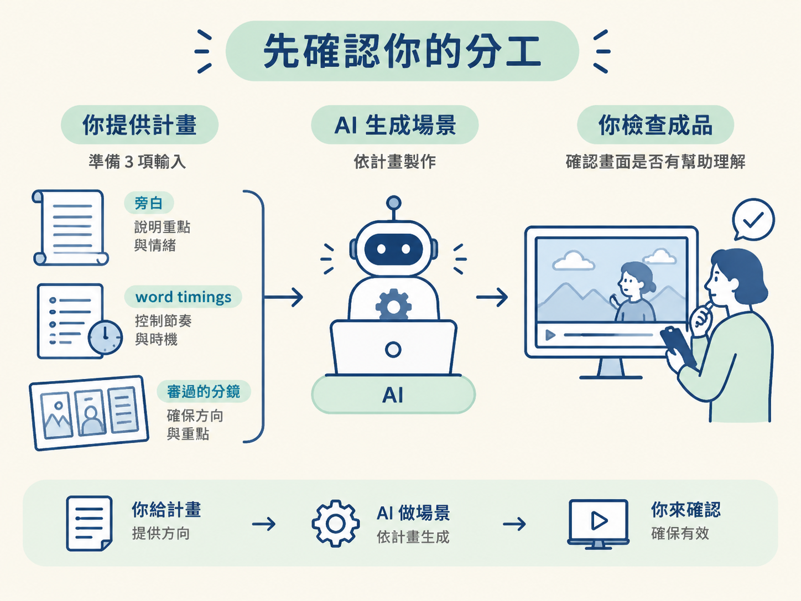
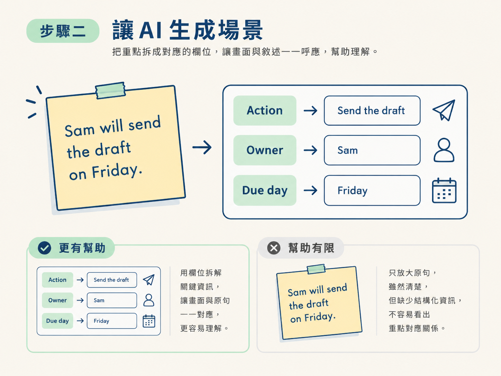

這一步的目標，是把已經準備好的旁白、時間碼和分鏡交給 AI，換回一個看得到、聽得到、可以播放的場景預覽。你不需要親手寫動畫程式；你要做的是把需求交代清楚，然後檢查 AI 做出的畫面有沒有幫觀眾跟上解釋。
動手前，請先確認三樣材料都在同一個專案裡：
這三樣就是場景階段的輸入。時間碼像畫面的節拍器，分鏡則像施工圖；少了其中一樣，AI 就很難做出和旁白對得上的場景。
前一個階段結束時，你手上已經有一整套材料：聽過的旁白、對過錄音的 word timings，以及每一句都配好畫面工作的分鏡。接下來不必從動畫程式開始，也不用自己把每個物件畫出來。
這一步的分工很簡單：AI 動手，你檢查。你提供計畫，AI 依照計畫生成場景；等預覽出來後，你再判斷畫面是否真的幫助觀眾理解。就像把施工圖交給工班，工班負責施工，但最後還是要由你確認成品有沒有蓋對。

請保持原本的專案開啟，不要換到另一個工作區。接著清楚告訴 AI 四件事：要使用哪份計畫、要保留什麼內容、要產出什麼，以及什麼時候才能匯出。
以共同範例 Sam 和 Friday 來說，可以這樣下指令：
請打開同一個專案，讀我審過的腳本、word timings 和 cues 分鏡，
用這份計畫把場景做出來。
照原本的便利貼「Sam will send the draft on Friday.」旁邊生成一張動作卡片，
保留原文，讓觀眾能對照哪一句變成了哪個欄位。
卡片要有三個欄位：Action（Send the draft）、Owner（Sam）、Due day（Friday）。
旁白講到哪個細節，就強調那個細節，一次強調一個。
做好後抓幾個重要節拍的靜格，並開一個配上這段旁白的預覽給我看。
先不要匯出，等我審過再繼續。送出前，可以逐項檢查這段請求：
Sam will send the draft on Friday.，再在旁邊生成動作卡片。請求送出後，接下來由 AI 動手。它採用的方式取決於你的工作區：
兩種工作區的操作畫面可能不同，但你的任務不變：不用親手寫動畫程式，而是等待 AI 依照旁白、word timings 和分鏡把場景做出來。
你要觀察的不是程式碼寫得漂不漂亮，而是畫面有沒有真的支援解釋。例如，同一句「Sam will send the draft on Friday.」，畫面可以在旁邊做出三個欄位的動作卡片，也可以只把原句放大。這兩種做法對理解的幫助不同；你要能看出差異，並說明哪一種更符合分鏡。

AI 完成場景後，請確認它已經開啟一個配上旁白的預覽，也確認還沒有匯出正式檔案。接著依序檢查以下內容：
Sam will send the draft on Friday. 應該仍然看得到，觀眾也能對照原句和卡片欄位的關係。如果畫面哪裡不對，先不要急著匯出。記下是哪個畫面、哪個時間點或哪個強調節奏有問題，下一步再把問題說成 AI 能執行的修正請求。
完成這一步時，你應該會拿到一個可以直接播放的場景預覽：它配著核准的旁白，依照分鏡演出，便利貼先出現，卡片在旁邊進來，旁白念到哪個細節，對應的位置就跟著被強調。
同時，你還應該有幾個重要節拍的靜格，並且尚未匯出正式檔案。這代表流程停在正確的位置：AI 已經把計畫做成看得見的成品，而你還保有審查和要求修改的機會。
場景階段的輸入是旁白、word timings 和審過的分鏡。你要在同一個專案裡把計畫交給 AI，請它生成場景、保留原文、控制強調節奏，並開一個配著旁白的預覽。程式由 AI 寫，你負責檢查畫面是否真的幫觀眾跟上解釋；在你審查前，先不要匯出。
下一步要處理的是預覽檢查：當畫面看起來有哪裡不對時，你要怎麼找出問題所在，又要怎麼把修改需求講清楚，讓 AI 能準確修正？